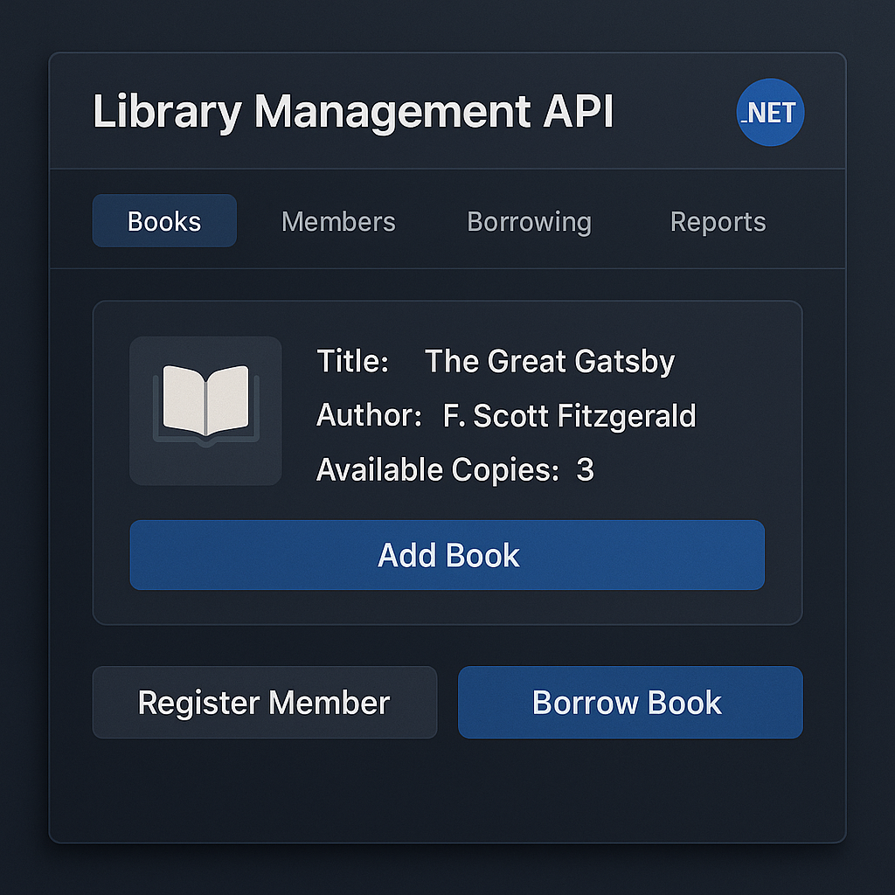

My Projects
Handpicked creations showcasing my skills in design, code, and problem-solving.



My Development Journey
From my first simple website to AI-powered tools, here's how my work has evolved.
💻
2023
Pet Haven
First React eCommerce project, evolved from a basic HTML/CSS site.
🏷️
2024
SalonEasy
.NET MVC salon management app, responsive and database-free.
🧬
Comming Soon
Disease Prediction Tool
AI-driven tool that predicts illnesses & suggests medicines from symptoms.